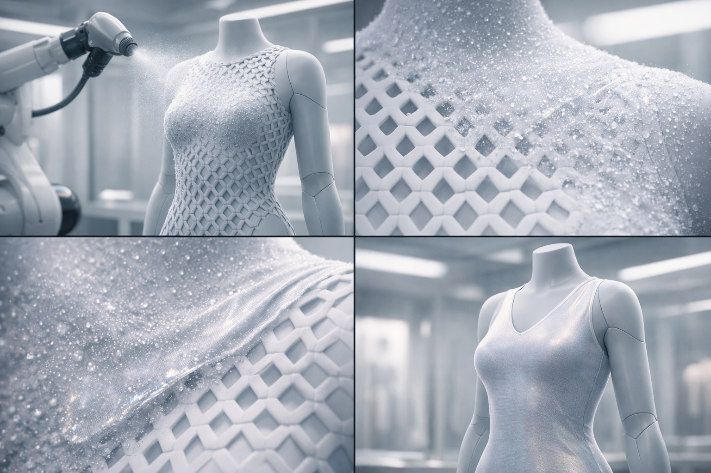
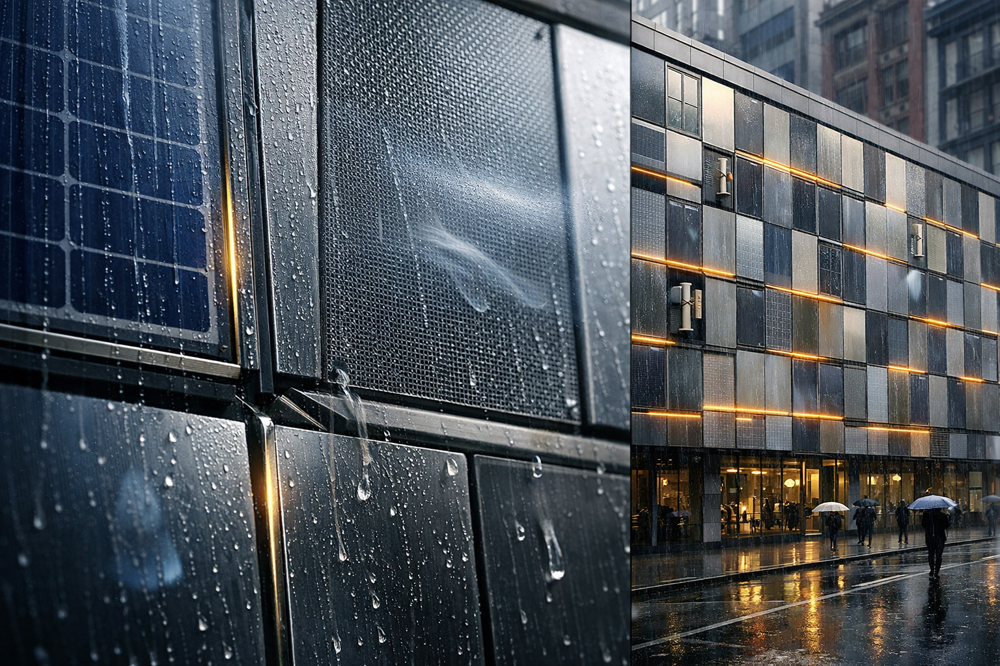

Memory Device
A device to capture and recreate a person's memory
Add your detailed description, concept, process, and insights for this speculative design here.
What if clothing and footwear could be designed and produced on-demand, tailored precisely to your body?

A new method for purchasing and wearing clothes
Add your detailed description, concept, process, and insights for this speculative design here.
A device to capture and recreate a person's memory
Add your detailed description, concept, process, and insights for this speculative design here.

Creating panels that produce energy, filter water & filter air
Add your detailed description, concept, process, and insights for this speculative design here.
Adaptive material systems
Add your detailed description, concept, process, and insights for this speculative design here.

Creating a reef growth structure
Add your detailed description, concept, process, and insights for this speculative design here.